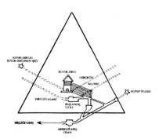

XVI. BÖLÜM
ANTİK KUTSAL GİZEMLER, AYİNLER VE TÖRENLER
Popol Vuh’un yardımıyla ve Kahire’deki Büyük Piramit’te bulunan yazıların deşifreleri sayesinde bazı antik gizem, ayin ve törenleri açıklamam mümkün oldu. Le Plongeon, Brasseus’ün Fransızca tercümesini Maya orijinaliyle karşılaştırarak Popol Vuh’u İngilizceye çevirmişti. Büyük bir nezaketle bu nüshayı not almam için bana verdi. Bu sebeple Popol Vuh ile ilgili kısımlar Le Plongeon’un eseridir.
Guatemala’da Quiche Mayaları kutsal gizemlerini adaylarla yedi basamak veya aşamada paylaşırlardı. İlk adımdan veya başlangıç aşamasından sonra, geri kalanlar altı oda veya evde gerçekleştirilirdi. Bu sınav veya aşamaların bazıları son derece ilgi çekici, zira bunların daha sonra Mısırlılar tarafından uygulandığını ve Eski Ahit’in her yerinde izlerinin bulunduğunu görüyoruz.
İlk Başlangıç Adımı: Bu adımda Kutsal Gizemleri öğrenecek olan adaylar; biri çamurdan, diğeri kandan iki nehri geçip, kendilerini bekleyen rahiplere giden dört yola ulaşmak zorundaydılar. Nehirler kaçınılması gereken tehlikelerle doluydu. Ardından çıktıkları dört yol -beyaz, kırmızı, yeşil ve siyah-onları Konsey’in beklediği yere götürüyordu. Konsey yüzleri örtülü on iki rahipten ve rahip gibi giydirilmiş ve süslenmiş tahta bir heykelden oluşuyordu. Konseyin huzurunda adaylara tahta heykel işaret edilerek Kral’ı selamlamaları söyleniyordu. Bu, muhakeme yeteneklerini ölçmek içindi. Ardından adaylar konseydeki her bireyi selamlayıp, daha kendisine söylenmeden adını veya unvanını bilmek zorundaydılar. Daha sonra adaylar belirli bir yere oturmaya davet ediliyorlardı. Eğer bu saygıdeğer konseye göstermeleri gereken hürmeti unutup gösterilen yere otururlarsa, iyi terbiye almadıkları ve düzgün hazırlanmadıkları için pişmanlık duyacak sebepleri oluyordu, zira koltuk taştan yapılmıştı ve ateş kadar sıcaktı. Daveti tevazuyla geri çevirdikten sonra, İkinci Sınav’a götürülüyorlardı.
Karanlık Ev: Karanlık Ev’de geceyi geçirmeleri ve İkinci Sınav’a boyun eğmeleri gerekiyordu. Adayların dış dünyayla iletişim kurmasını engellemek için çevreye muhafızlar dikiliyor, ardından her birine yanan bir meşale ve bir puro veriliyordu. Bunların söndürülmesi yasaktı, buna rağmen gün doğumunda evin sorumluları onları geri istediğinde tükenmemiş olmaları gerekiyordu. Puro ve meşalesinin yanıp bitmesine izin verenin vay hâline! Onu korkunç cezalar, hatta ölüm bekliyordu. İkinci sınav başarıyla tamamlandığında, Üçüncü Sınav’a göğüs gerilmesi gerekiyordu.
Mızraklar Evi: Burada adayların dışarıdan kimseyle konuşmadan ve yanlarında getirmeden dört saksı nadir çiçek bulmaları gerekiyordu. Ayrıca her birinin kendisini bu iş için özel için seçilmiş yetenekli bir mızrakçının saldırılarından da koruması lazımdı. Şafakta bu mücadeleden zaferle ayrılanlar Dördüncü Sınav’a layık sayılırlardı.
Buz Evi: Bütün geceyi geçirecekleri bu ev son derece soğuktu. Soğuğa yenilip donarak ölmekten korunmaları gerekiyordu. Bunun ardından Beşinci Sınav başlıyordu.
Kaplan Evi: Kaplan Evinde vahşi hayvanlar tarafından parçalanma tehlikesine mazur kalıyorlardı. Kaplan yuvalarından sağ salim çıktıktan sonra, Altıncı Sınav için hazır hâle geliyorlardı.
Ateş Evi: Burası gün batımından gün doğumuna kadar kalacakları, cayır cayır yanan bir fırındı. Buradan kavrulmadan ayrılanlar sınavlar arasında en sert olana, Yedinci ve Son Sınav’a girmeye hak kazanıyorlardı.
Yarasa Evi: Bu Camazotz’un, Yarasalar Tanrısı’nın eviydi ve öldürücü silahlarla doluydu. Burada bizzat Tanrı yükseklerden inerek adaylara görünür ve gafil avlananların kafalarını keserdi.45
Yukarıdakiler Le Plongeon’un tercümelerinin bir özeti. O, bu törenlerin Xibalba’da, Guatemala dağlarının ortasında bir yerde yapıldığını söylüyor. Korkarım Le Plongeon bu sınavlar konusunda doğru bir fikir vermeyi başaramamış. Okuyucularına bunların tümünün sembolik olduğunu anlatmalıydı, oysa o bunların gerçek olduğu izlenimi bırakmaya ve bu sayede kanı donduran, hayret verici, doğaüstü bir gizem yaratmaya çalıştı. Yine de Le Plongeon bir şeyi atladı, zira ilk denemede adayın önceden hazırlandığını, dolayısıyla ne diyeceğini, ne yapacağını ve nasıl davranacağını bildiğini söylüyor. Başka bir deyişle, aday önceden derslerini öğrenmişti ve bu sınavlar da onları anlayıp anlamadığını sınayan denemelerdi.
Yukarıdakiler tamamen Kahire’deki Büyük Piramit’in duvarlarında bulunanlar sayesinde ortaya çıktı. Burada adayın önceden hazırlandığı ve kendisine tüm sınavlar boyunca dost bir ruhun (bir eğitmenin) eşlik ve rehberlik ettiği söyleniyor.
Yarasadan bir Maya sembolü olarak bahseden herhangi bir edebi esere bakıldığında, yazarın değişmez şekilde Mayaların yarasayı tanrı saydıklarını ve ona taptıklarını söylediği görülür. Mayalar yarasayı tanrı saymıyorlardı, ona tapıyor da değildiler. Bu Yedinci Sınav’da, “Yarasa Evi”nde son derece açık biçimde gösteriliyor. “Tanrı’nın yükseklerden inip adayı gördüğü ve sınavdan geçirdiği” açıkça belirtildiği hâlde buna nasıl yarasalara tapmak denebilir? Tüm tören sembolik. Adaya, son geldiğinde bunu karşılamaya nasıl hazırlanması gerektiğini gösteriyor.
Piramit Tapınak: Şimdi Kahire yakınlarındaki Büyük Piramit sayesinde ortaya çıkan Antik Mısır Kutsal Gizemlerini, Popol Vuh yoluyla öğrenilen Mayalılarınkiyle kıyaslayacağım.
Giriş kapısı kuzeye yerleştirilmişti ve kare üzerine yerleştirilip bir eksen veya tepe noktası üzerinde döndürülmüş eşkenar üçgen şeklinde tek bir taştan oluşuyordu. Rahip adayının buradan geçmesi zorunluydu, çünkü bu kapı yaşamla ahiret arasındaki geçişi simgeliyordu. Büyük Doğu’ya erişmeden önce geçilmesi gereken on iki kapı mevcuttu ve bunların her birinin kendi sırları ve sınavları vardı.
İlki gözle görülmezdi, anlaşıldığı kadarıyla boştu ve Horus tarafından korunuyordu. Bu bir boşluk veya hiçlikti, çünkü rahip adayı gözleri bağlı ve hareket yeteneği dışındaki tüm duyularından yoksundu. Bu kapı dost bir ruh yardımıyla aşılmalıydı. Kapıdan geçtikten sonra görmediği bu dost ruh yardımıyla geçitlerden aşağıya yönlendirilir ve ölülerinin ruhlarının bekleyen rahip adaylarına inen Ruh yardımıyla tazelendiği başlangıç yerine götürülürdü. Daha sonra Merkez Ateş Odası’na geçirilir ve ateşi söndürürdü.

Büyük Piramit’in içi, Mısır. Tapınağın mimarisi gösteriliyor.
Ölüler Kitabı, 22. bölüm: “Ben geliyorum, Ateş gününde kalbimden geçeni yerine getiriyorum, alevleri onlar daha parlar parlamaz söndürerek.” Ve 25. bölüm: “Adama Büyük Ev’deki adını hatırlatıyorum. Ona Ateş Evi’ndeki adını hatırlatıyorum.” Ateş Havuzu’na Ölüler Kitabı’nda sık sık, daha önce bahsedilen sembol veya desenle beraber rastlanıyor.
Aday, Merkez Ateş Odası’ndan (Ateş Havuzu) yukarıya, büyük Cennet Ufku’na yönlendiriliyor ve burada bir kapıya ulaşıyordu. Sorular soruluyor, o da cevaplayarak kapıdan geçip ona sunulan ışıkla yeniden görmeye başlıyordu. Dost rehberinin yüzüne baktıktan sonra Gölge Odası, Haklının Yargısı, Hakikat ve Karanlık Odalarıyla Yedi Ölüm Salonu’na götürülüyordu.
Burada bir sınava tabi tutuluyordu. Kendisine ikinci kapıdan geçirilmeden önce aklında tutması gereken sözler veriliyordu, kapıdan geçmek için bunları söylemesi gerekliydi.
İkinci aşamayı geçmiş olan adayın, Onuncu Hakikat Salonu veya Yargı Mekânı adı verilen salona girmesine izin verilirdi. Bu salon siyah ve beyaz mozaikle döşenmişti: Doğru ve Yanlış, Gerçek ve Yalan.
Bu salondan Yeni Doğum Odası’na, ruhun yenilenmesinin gerçekleştiği yere yönlendiriliyordu. Bu odada boş bir lahit ve fanilik sembolleri bulunuyordu. Ufak bir açıklık, parlak sabah yıldızı Sothis’in ışığını odaya kabul ediyordu. Odanın geri kalanı adaya neyi geride bıraktığını hatırlatıyordu. Artık mezardan çıkabilirdi.
Bunun ardından Ruhun Yenilenme Tahtı’na götürülüyordu ve burada Aydınlanmanın Bağışlanması gerçekleşiyordu. Aday Doğu Odası’na, Ra’nın Tahtı’na ulaşıp bir Üstat olmak için başka zorluklara göğüs geriyordu. Uzaklarda, geleceğin tüm mutluluğunu gösteren yaratılmamış ışığı kendi gözleriyle görebiliyordu. Eğilerek geçmek zorunda kaldığı başka bir kapının ardından, Büyük Doğu Odası’na ulaşıyordu.
Adayın bir öğrenci olarak kabul görmesi için ateş sınavını geçmesi gerekliydi. Öğrenci haklı çıkmalıydı. Haklı çıkan aydınlanmalıydı. Aydınlanmış olan ise İlahi Ev’in en içine ulaşmak için olgunlaşıp Üstat olmalıydı.
Mısır ve Maya yorumlarını karşılaştırırsak: Piramit tapınakta46 on iki oda veya geçit vardı, Maya yorumunda ise yedi ev. Mısır ve Maya yorumlarının ikisinde de Karanlık Oda vardı. Mısırlıların Ateş Havuzu’na karşılık Mayaların Ateş Evi vardı. Mısırlıların Yedi Ölüm Salonu, Mayaların ise bunlara karşılık gelen Yarasa Evi vardı.
Mu yok olduktan sonra dünya insanları onun yok oluşunu bir şekilde simgeleştirdiler, böylece “onun hatırası gelecek nesillerde hiç unutulmayacaktı.” Yucatan Mayaları onun adına, bugün hâlâ ayakta duran bir piramit diktiler. Onun hatırasına tapınaklar da inşa ettiler. Quiche Mayaları bunu sembolik bir “Ateş Evi” hâlinde dini törenlerine eklediler. Yunanlılar onu bugün alfabelerini meydana getiren bir Maya destanı oluşturarak simgelediler. Bu destan, daha önce gösterdiğim gibi Mu’nun yıkımının nasıl gerçekleştiğini anlatıyor.
Mısırlılar, Quiche Mayaları gibi, onun yıkımını dini törenleriyle simgelediler. Aday dini gizemlerde tecrübe kazandıkça sembolik olarak anayurdunun yok olduğu yerden geçiyor, böylece yaşamda onu hafızasında saklamış oluyordu. Musa ise onu şimdi Tevrat’ta görülen saklı hâliyle simgeledi.